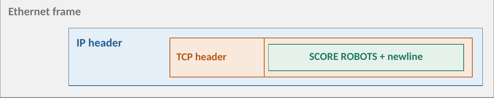
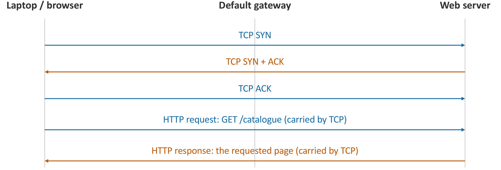
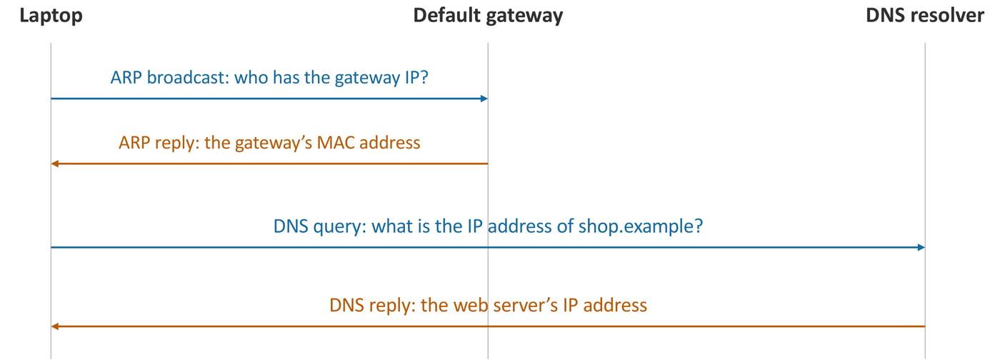

Lecture 5: The Application Layer (HTTP and DNS)
Lecture 4 showed how TCP and UDP deliver bytes to the right program. This page asks what those bytes mean, and how a browser gets from a typed name to a page on the screen. It joins every Part II lecture into one story: DNS finds the server’s address, ARP and IP deliver the packets, TCP carries the bytes, and HTTP gives them meaning.
Exam scope. The revision guide makes only five areas of Lecture 5 examinable, and this page covers exactly those:
| Area | You should be able to explain |
|---|---|
| 1. The role of DNS | A browser asks a DNS resolver for the server’s IP address. DNS supplies the address, not the web page. |
| 2. HTTP over TCP | The browser sends an HTTP request over TCP; the server returns an HTTP response on that connection. |
| 3. GET, POST and HTTPS | Where GET and POST carry form data, and what HTTPS protects. POST alone does not encrypt. |
| 4. Loading a web page | Trace ARP, DNS, TCP setup, the HTTP request and the response, and say what each step supplies. |
| 5. A name-resolution failure | Recognise evidence of a DNS problem. A ping reply to an IP address does not prove the web service works. |
Everything else in Lecture 5 is not examinable this year: detailed HTTP message formats, recall of status codes, how HTTPS works inside, persistent connections and their timing, cookies and sessions, caching, CDNs, HTTP/2 and HTTP/3, and the DNS hierarchy, delegation, record types, registration and TTLs. IP, routing and TCP/UDP from earlier lectures stay examinable when a web-request question uses them.
Tutorial 2.3 Q3b is here, with the official solution.
1. What an Application Protocol Adds
1.1 Right bytes, no meaning
IP gets a packet to the right host. TCP or UDP gets the data to the
right program. But correct delivery does not tell the program what the
bytes mean. TCP can deliver the characters
MOVE 1; it cannot say whether 1 is a step or a
metre, or what reply to send.
Two programs must agree on that first. The agreement is an application protocol: it defines the messages that application processes exchange and the rules for interpreting and answering them.
| Part of the agreement | Question it answers |
|---|---|
| Message types | Is this a request, a reply or an error? |
| Syntax | Where are the operation, the resource and the data written? |
| Semantics | What does each field or operation mean? |
| Behaviour | When is a message sent, and what happens next? |
For the web: the network application is the World Wide Web, the application processes are a browser and a web-server program, and the application protocol is HTTP. Two different programs (say Chrome and a Python server) can talk because both follow HTTP.
1.2 A transport ACK is not an application reply
The lecture’s teaching protocol is a score service. The client sends
SCORE ROBOTS plus a newline; the server replies
RESULT 3. The newline marks the end of each message, and
one request gets one result or one error.
- The TCP ACK says “your request bytes arrived”.
- The application reply
RESULT 3says “the score is 3”.
These are different answers from different layers. TCP acknowledges bytes. Only the application reports a result.
1.3 Encapsulation
Encapsulation means a lower layer carries the higher
layer’s data as its payload. The client writes SCORE ROBOTS
to a TCP socket; TCP adds its header; IP adds its header; Ethernet adds
its header and trailer. The receiver removes each layer in turn, and the
application reads the bytes using its own rules.

The Internet model groups OSI’s application, presentation and session layers into one application layer. The functions are still needed; only the grouping differs.
1.4 Sockets, ports and the transport choice
A socket is the endpoint through which a program
uses a transport service. An IP address plus a port names each end: the
browser at 192.0.2.10:51000, the web server at
198.51.100.80:80. Ports and the four-value connection
identifier are in Lecture 4, Section 2.
| Application protocol | Purpose | Usual transport and port |
|---|---|---|
| HTTP / HTTPS | Web pages and APIs | TCP 80 / TCP 443 |
| DNS | Name lookups | UDP 53 (TCP 53 for a truncated reply) |
| SMTP / IMAP | Send / read email | TCP 25 / TCP 143 |
| SSH | Remote login | TCP 22 |
| DHCP | Get network settings | UDP 67 (server), 68 (client) |
| Application need | Transport |
|---|---|
| Correct, ordered contents (a file, a web page) | TCP: it recovers losses and keeps order |
| Timely data (voice, game updates) | UDP: late data loses value, so the application chooses its own recovery |
| Separate messages | UDP keeps datagram boundaries. Over TCP, the application must mark its own boundaries |
2. Area 1: DNS Supplies the Address
People type names; packets need IP addresses. DNS (Domain Name System) looks up the IP address that belongs to a name, like a phone book.
- The device asks its DNS resolver: “what address
belongs to
www.example.com?” The resolver is the DNS helper the network provides (campus, ISP, home router, or a public one such as 8.8.8.8). Its address usually arrives by DHCP, or is set by hand. - The resolver does the work of finding the answer and returns the address. The device talks only to its resolver.
- DNS resolves only the hostname of a URL. The path and query go to the web server inside the HTTP request.
| DNS lookup | Web request |
|---|---|
“What address belongs to www.example.com?” |
“Please send /index.html.” |
| Sent to the DNS resolver | Sent to the web server |
| Supplies information needed to contact the server | Requests the resource itself |
DNS supplies the address, not the web page. The page comes later, over HTTP.
DNS messages need delivery too. A DNS query is application data inside UDP (or TCP), on server port 53. It needs IP routing like any packet, and the device may first need ARP for its gateway’s MAC address before it can send a query to a remote resolver.
| DNS transport | Use |
|---|---|
| UDP 53 | Common: one small query, one small reply |
| TCP 53 | Used to get the complete answer after a UDP reply is marked truncated |
| DNS over TLS / HTTPS | Protects the exchange between the client and its chosen resolver |
DNS resolves an IP address to a MAC address.
False. DNS turns a name into an IP address. ARP turns an IP address into a MAC address, and only on the local link.
3. Area 2: HTTP over TCP
3.1 Resources and URLs
HTTP (Hypertext Transfer Protocol) is a request-response protocol. The client sends a request; the server returns one response. A resource is the thing requested (a page, a score). A representation is the data that comes back about it (an HTML document, or JSON for a web API).
| Term | Role |
|---|---|
| Internet | The interconnected network infrastructure |
| Web | An application for reaching linked resources, named by URLs |
| HTML | Describes a document’s structure |
| HTTP | Requests and responses for resources |
A URL (Uniform Resource Locator) names a resource:
| Part | In https://www.example.com/scores?team=robots |
Purpose |
|---|---|---|
| Scheme | https |
HTTP with encryption and server authentication |
| Hostname | www.example.com |
The name DNS resolves to an address |
| Path | /scores |
The resource on that server |
| Query | team=robots |
A parameter for that resource |
One displayed page usually needs several objects.
The browser first gets index.html, reads it, finds the
style sheet and images it refers to, and requests each one. So one page
can mean several request-response exchanges.
3.2 One exchange over TCP

- TCP setup: the three-way handshake to the server’s port (80 for plain HTTP).
- HTTP request: for example
GET /index.html, carried as TCP data. - HTTP response: a status, headers, then the content, carried as TCP data on the same connection.
A minimal request and response look like this (you need not recall the formats in detail):
GET /index.html HTTP/1.1
Host: www.example.com
HTTP/1.1 200 OK
...headers...
...page content...Each layer has its own job:
| Layer | What it does here |
|---|---|
| IP | Carries packets between the two hosts |
| TCP | Delivers an ordered byte stream to the application endpoint (port 80) |
| HTTP | Says which resource is wanted, and tells the browser how to read the response |
The TCP endpoints are the laptop and the web server. The gateway in between only forwards packets (and translates addresses and ports with NAT). It does not end the TCP connection.
The TCP ACK for an HTTP request tells the browser that the server found the page.
False. A TCP ACK only says the request bytes arrived. Whether the resource exists is an application answer, given in the HTTP response.
4. Area 3: GET, POST and HTTPS
4.1 GET and POST
- GET requests a representation of a resource (read).
An HTML form that uses GET puts the submitted values in the URL
query:
/scores?team=robots. - POST asks the server to process submitted content. An HTML form that uses POST puts the values in the request body:
POST /join HTTP/1.1
Host: www.example.com
Content-Type: application/x-www-form-urlencoded
Content-Length: 8
name=Mei| GET | POST | |
|---|---|---|
| Purpose | Read a representation | Ask the server to process data |
| Where form data goes | URL query | Request body |
| Exposure | The URL can stay in browser history and logs | Out of the URL, but may still be logged |
| Changes server state? | Not intended | May. Repeating it may submit twice |
| Encryption | None | None |
4.2 HTTPS
HTTPS is HTTP over a protected connection. TLS (Transport Layer Security) sits between HTTP and TCP, so the stack is HTTP, TLS, TCP, IP, usually on TCP port 443. TLS:
- encrypts the HTTP messages in transit;
- protects their integrity (detects tampering);
- normally authenticates the server.
Putting a password in a POST body does not encrypt it. POST only moves the data out of the URL. A sensitive form needs HTTPS. And HTTPS protects the exchange in transit only: a GET URL can still stay in browser history and other records.
Model short answer. “Why does a login form need HTTPS even though it uses POST?” POST only places the password in the request body instead of the URL; the body is still sent as readable text. HTTPS runs HTTP over TLS, which encrypts the exchange in transit and authenticates the server, so an eavesdropper cannot read the password.
A POST request is encrypted, so a password form is safe without HTTPS.
False. POST keeps the data out of the URL, but it is still plain text on the wire. Only HTTPS (TLS) encrypts it.
5. Area 4: Loading a Web Page
5.1 Ask what is missing, then which mechanism supplies it
Before listing any packet, ask: what information does the laptop lack, and which mechanism supplies it?
| Missing information | Supplied by | Messages |
|---|---|---|
| MAC address of the local next hop (gateway, or a local resolver) | ARP | Request (broadcast), reply |
| The web server’s IP address | DNS | Query to the resolver, reply |
| A connection to the server | TCP | SYN, SYN+ACK, ACK |
| The page | HTTP | GET, response |

Three rules decide the addresses in each frame:
- ARP resolves only the local next hop. If the DNS resolver or the web server is outside the subnet, the laptop ARPs for the gateway, never for the remote host.
- Ethernet destination = next hop. IP destination = final host. Every frame to the remote server carries the gateway’s MAC but the server’s IP.
- DNS does not give the server’s MAC. The laptop never needs it.
5.2 Lecture example: the first request for a web page
Example Question (lecture). A laptop opens
http://www.example.com/. The DNS answer will be
198.51.100.80. The laptop is 192.168.40.10/24 (MAC L). The gateway,
which is also the DNS resolver, is 192.168.40.1 (MAC G). Which frames
does the laptop exchange before the first page content arrives? Assume
/24, empty ARP and DNS caches, no TCP connection, working routing and
NAT, UDP DNS, plain HTTP, no loss and no proxy. Observe the laptop’s LAN
frames (before outbound NAT, after inbound NAT).
Answer
| # | Frame and purpose | MAC: from → to | IP: from → to |
|---|---|---|---|
| 1 | ARP request: who has 192.168.40.1? | L → broadcast | no IP header |
| 2 | ARP reply: .1 is at G | G → L | no IP header |
| 3 | DNS query: www.example.com |
L → G | 192.168.40.10 → 192.168.40.1 |
| 4 | DNS answer: 198.51.100.80 | G → L | 192.168.40.1 → 192.168.40.10 |
| 5 | TCP SYN to port 80 | L → G | 192.168.40.10 → 198.51.100.80 |
| 6 | TCP SYN+ACK | G → L | 198.51.100.80 → 192.168.40.10 |
| 7 | TCP ACK | L → G | 192.168.40.10 → 198.51.100.80 |
| 8 | HTTP GET, carried by TCP | L → G | 192.168.40.10 → 198.51.100.80 |
| 9 | First response content | G → L | 198.51.100.80 → 192.168.40.10 |
- Frames 1–4: the resolver is local, so ARP supplies its MAC; DNS then supplies the server’s IP.
- Frames 5–9: IP destination is the remote server, Ethernet destination is the gateway. MAC G is already cached from frame 2.
- One teaching trace: an ACK and data may combine, and a message may span several segments.
Variation (lecture). Change only the resolver: it is now 203.0.113.53, outside the /24. Which address does the laptop ARP for?
Answer
192.168.40.1, the gateway. The DNS query’s IP destination stays 203.0.113.53, and its Ethernet destination is MAC G. ARP resolves the local next hop only; the laptop never ARPs for a resolver beyond its subnet.
5.3 When something is already cached
Same network, a new TCP connection, and the cached entries are still valid:
| Starting information | What the laptop still does |
|---|---|
| Gateway MAC in the ARP cache | Skip ARP. Query DNS if the server’s IP is not cached. |
| Server IP in the DNS cache | Skip DNS. Still ARP for the gateway if its MAC is missing (frame 5 needs it). |
| Both cached | Start the TCP handshake straight away. Five frames remain (SYN to response). |
| An open TCP connection too | Only the HTTP request and response |
5.4 Tutorial 2.3 Q3b
Tutorial 2.3 Q3. A user subscribes to an ISP home
broadband service and connects his computer directly to it via an ADSL
modem. The ipconfig output (Lecture 2 Part A, Section A9)
shows the computer at 192.168.1.68/24 with MAC 00-23-26-AA-AA-AA; the
modem 192.168.1.254 (MAC 00-24-17-BB-BB-BB) is its default gateway, DHCP
server and DNS server.
- The user launches his web browser and requests for the default web page at http://www.ntu.edu.sg without the use of web proxy. Assume that all the caches of the computer are initially empty. Using a table similar to Table Q3, list the sequence of frames being sent and received by the computer until the first frame containing the requested web page is received.
Answer (official solution)
| Frame | Source MAC | Destination MAC | Source IP | Destination IP | Purpose |
|---|---|---|---|---|---|
| 1 | 00-23-26-AA-AA-AA | FF-FF-FF-FF-FF-FF | – | – | ARP request for 192.168.1.254 |
| 2 | 00-24-17-BB-BB-BB | 00-23-26-AA-AA-AA | – | – | ARP reply |
| 3 | 00-23-26-AA-AA-AA | 00-24-17-BB-BB-BB | 192.168.1.68 | 192.168.1.254 | DNS query for www.ntu.edu.sg |
| 4 | 00-24-17-BB-BB-BB | 00-23-26-AA-AA-AA | 192.168.1.254 | 192.168.1.68 | DNS reply: 155.69.6.163 |
| 5 | 00-23-26-AA-AA-AA | 00-24-17-BB-BB-BB | 192.168.1.68 | 155.69.6.163 | TCP SYN (port 80) |
| 6 | 00-24-17-BB-BB-BB | 00-23-26-AA-AA-AA | 155.69.6.163 | 192.168.1.68 | TCP SYN+ACK |
| 7 | 00-23-26-AA-AA-AA | 00-24-17-BB-BB-BB | 192.168.1.68 | 155.69.6.163 | TCP ACK |
| 8 | 00-23-26-AA-AA-AA | 00-24-17-BB-BB-BB | 192.168.1.68 | 155.69.6.163 | HTTP GET |
| 9 | 00-24-17-BB-BB-BB | 00-23-26-AA-AA-AA | 155.69.6.163 | 192.168.1.68 | HTTP reply |
One ARP exchange is enough: the modem is both the DNS server and the gateway. After learning its MAC, the computer uses it as the destination for the DNS query and for every packet to the web server.
The table shows the computer’s LAN side. The modem’s NAT changes 192.168.1.68 to its public address on the way out and back on the way in, so the computer only ever sees its private address.
General method: listing the frames of a web request
- Is the DNS resolver on my subnet? Yes: ARP for it. No: ARP for the gateway. Skip ARP if the MAC is cached.
- DNS query and reply (UDP 53). Skip if the name is cached.
- The web server is almost always off the subnet: every frame to it has Ethernet destination = gateway MAC, IP destination = server.
- TCP handshake: SYN, SYN+ACK, ACK.
- HTTP GET, then the first response frame.
- List only frames on the laptop’s own LAN. With nothing cached and the resolver local (or the gateway), that is 2 + 2 + 3 + 2 = 9 frames.
6. Area 5: Is It DNS?
A website will not load. Test the name and the address separately, and say what each result does and does not establish.
| What you try or see | Result | What it suggests |
|---|---|---|
Open http://www.example.com/ |
Name-resolution error | Check DNS. The browser’s wording alone is not a full diagnosis. |
ping 203.0.113.10 (the server’s address) |
Replies arrive | The address is reachable for ICMP. The HTTP service is still untested. |
nslookup www.example.com |
DNS request timed out | No DNS reply before the timer. Check the resolver and the path to it. |
nslookup www.example.com |
Non-existent domain | The resolver says there is no such name. Check the spelling and the DNS setup. |
| Name fails, but a test to the IP address succeeds | Suspect DNS first. This alone does not prove HTTP works. | |
| The host has the wrong subnet mask | It may ARP for a destination that should go through its gateway (Lecture 2 Part B). | |
| Ping replies, but the web connection fails | ICMP reachability does not show that the TCP port or the web application is available. | |
| The page loads but the download is slow | Consider the effective window, RTT, loss and bottleneck capacity (Lecture 4, Section 10). Access-link speed alone does not decide it. |
Model short answer.
“ping 203.0.113.10 succeeds but
http://www.example.com gives a name-resolution error. What
is the likely problem?” Name resolution: the server’s address is
reachable over IP, but the browser cannot turn the name into that
address. Check the DNS resolver setting and the path to it, for example
with nslookup. The ping reply does not prove that the web
service itself works.
The ping to the server’s IP address succeeds, so the website is working.
False. A ping tests IP reachability with ICMP only. The web-server program, its TCP port 80 or 443, and HTTP could all still fail.
Exam patterns
The finals have MCQs and short structured answers written into tables. The revision guide’s advice: state the result or mechanism, then the reasoning; plan the key points before writing, because some answer spaces are deliberately small.
| Question type | How to attack it | Trap |
|---|---|---|
| Frame table: ARP, DNS, TCP, HTTP | What is missing? ARP (next hop), DNS, SYN/SYN+ACK/ACK, GET, response. Skip what is cached. | Putting the server’s MAC in a frame. ARPing for a remote resolver. |
| Which address does ARP resolve? | AND with the host’s own mask; remote means the gateway | Matching the first three octets instead of using the mask |
| What does DNS supply? | The server’s IP address for the hostname | Saying DNS fetches the page, or finds MAC addresses |
| GET, POST, HTTPS | GET: URL query. POST: body. HTTPS: encrypts, protects integrity, authenticates the server | Saying POST encrypts |
| Diagnose a failure | Test the name and the address separately; say what each test does not prove | Treating a ping reply as proof the website works |
| Layers in a web request | IP: hosts. TCP: ordered bytes to the endpoint. HTTP: which resource and how to read it | Saying the gateway ends the TCP connection |
Common Traps
- DNS supplies the address, not the page. And it resolves only the hostname of a URL.
- DNS does not find MAC addresses. ARP does, on the local link only.
- ARP the next hop. A remote resolver or server means ARP for the gateway.
- Ethernet destination = next hop; IP destination = final host.
- A TCP ACK is not an application reply. TCP confirms bytes; HTTP reports the result.
- The gateway forwards (and NATs); it is not a TCP endpoint.
- Neither GET nor POST encrypts. Only HTTPS does. A GET URL can stay in history even with HTTPS.
- A ping reply proves only ICMP reachability, not that the TCP port or the web application works.
- Name fails but the IP works: suspect DNS first.